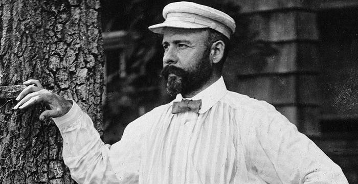

Louis Sullivan (1856-1924) was a pioneering American architect known as the “father of skyscrapers” and a major figure in modern architecture. He was a key Chicago school member and mentored Frank Lloyd Wright. Along with Wright and Henry Richardson, Sullivan is considered one of the most influential architects of his time. The famous design principle “form follows function” is often attributed to him, although the concept dates back to the ancient Roman architect Vitruvius. Sullivan was awarded the AIA Gold Medal posthumously in 1944, making him the second architect to receive this prestigious award.
